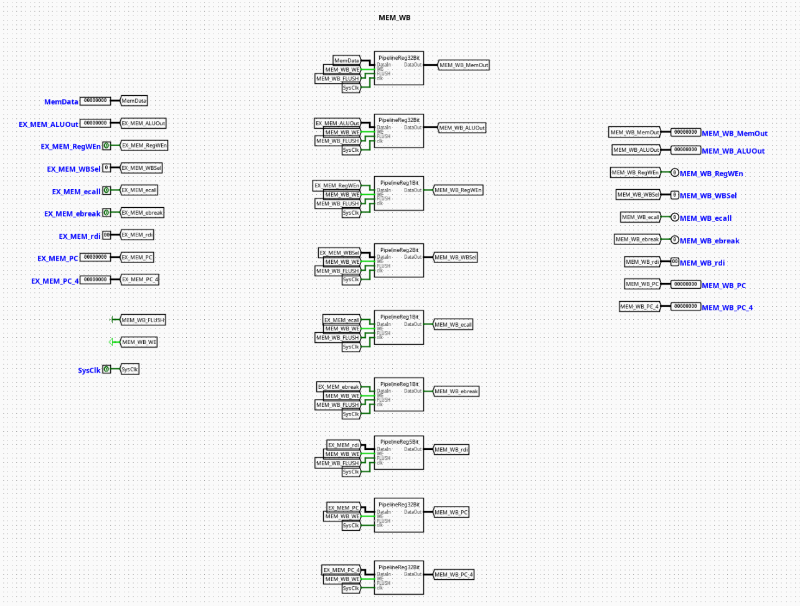

MEM | WB Pipeline Register
Overview
The MEM_WB component serves as the terminal pipeline stage boundary register isolating the Memory Access (MEM) stage from the Writeback (WB) stage of a pipelined RV32I processor. It acts as a synchronous stabilization barrier that captures memory-load results, arithmetic operations, and register tracking metadata at the end of the memory cycle to prepare them for commit.
- Purpose in CPU: Buffers execution metrics, destination register pointers, and writeback routing controls across clock boundaries to guarantee stable register file updates while succeeding instructions advance into the memory access stage.
-
Role in datapath: Latches data outputs returning from Data Memory alongside direct ALU bypass payloads, holding them static for a full cycle before passing them into the Writeback Controller selection network.
-
Source:
logisim/RiskVPipelineRegs.circ
Interface
Inputs
| Signal | Width | Description |
|---|---|---|
SysClk |
1 bit | Master system clock line driving all internal edge-triggered sub-registers. |
MEM_WB_WE |
1 bit | Active-high write enable control bit. When deasserted (0), updates are frozen to enforce a pipeline stall. |
MEM_WB_FLUSH |
1 bit | Active-high synchronous flush vector. Overrides incoming tracks to inject a pipeline bubble. |
RegWEn |
1 bit | Register write enable signal intended for the eventual Register File writeback validation. |
WBSel |
2 bits | Multi-channel multiplexer selection path index tracking the origin of the writeback data payload. |
ecall |
1 bit | Environment call instruction exception indicator forwarded for downstream trap management. |
ebreak |
1 bit | Environment break instruction exception indicator forwarded for downstream diagnostic handling. |
rdi |
5 bits | 5-bit target destination register address tracking index (rd). |
ALURes |
32 bits | Raw computational result or calculated memory address bypassed from upstream stages. |
MemRData |
32 bits | Formatted data word returned from the Data Memory (DMem) read alignment framework. |
PC_4 |
32 bits | Incremented Link/Return address step tracking vector (PC + 4) carried down from the fetch stage. |
Outputs
| Signal | Width | Description |
|---|---|---|
MEM_WB_RegWEn |
1 bit | Synchronized writeback register destination update flag delivered to the Register File write port. |
MEM_WB_WBSel |
2 bits | Latched selection tracking bits driving the Writeback selection multiplexer. |
MEM_WB_ecall |
1 bit | Latched exception indicator signaling terminal instruction traps. |
MEM_WB_ebreak |
1 bit | Latched exception indicator signaling terminal hardware diagnostic breaks. |
MEM_WB_rdi |
5 bits | Latched structural index field detailing the target register assignment (rd) for writeback routing. |
MEM_WB_ALURes |
32 bits | Latched arithmetic outcome delivered to channel 00 of the writeback selection matrix. |
MEM_WB_MemRData |
32 bits | Latched data memory read word delivered to channel 01 of the writeback selection matrix. |
MEM_WB_PC_4 |
32 bits | Latched sequential execution return pointer delivered to channel 11 of the writeback selection matrix. |
Output Logic (Core Definition)
The underlying processing constraints evaluate condition variables synchronously over each master clock edge transition.
Rule-based definition
- Synchronous Flush Mode:
-
If
MEM_WB_FLUSH==1→ All output data channels, target register indices, and control flags are forced synchronously to0. This injects an execution bubble into the writeback phase, disabling the register write enable line (MEM_WB_RegWEn=0) to prevent state corruption during an exception or late pipeline recovery. -
Standard Gated Latch Mode:
-
If
MEM_WB_FLUSH==0andMEM_WB_WE==1→ Outputs update cleanly to match the active incoming datapath fields (MEM_WB_X=X). -
Freeze / Hold Mode:
- If
MEM_WB_FLUSH==0andMEM_WB_WE==0→ The component locks its current state registers, ignoring updates on the input buses to hold the writeback context constant until hazards clear.
Internal Design
The circuit architecture isolates discrete data bit-planes by nesting uniform register blocks inside dedicated submodules mapped to specific widths.
- Combinational vs Sequential Structure: Actual state containment transitions over standard sequential edge-triggered Logisim registers. The conditional clear loops, input-intercept multiplexers, and write-enable distribution systems are completely combinational.
- Subcircuits Used:
PipelineReg1Bit(Encapsulates a single-bit register with built-in flush multiplexing for basic flags)PipelineReg2Bit(Manages the 2-bitWBSelsignal track)PipelineReg5Bit(Manages the 5-bitrditarget register index)-
PipelineReg32Bit(Buffers the wide 32-bitALURes,MemRData, andPC_4busses) -
Gating Framework: Each bit-plane width variant utilizes an input-side multiplexing layout. Asserting
MEM_WB_FLUSHchanges the selection on internal 2-to-1 multiplexers placed right before the register input pins, diverting the storage targets away from live data and into constant zero blocks. Local control paths distributeMEM_WB_WE,MEM_WB_FLUSH, andSysClkin parallel across all internal blocks using unified label tunnels.
Operation
Step-by-step behavior:
- Signals Present: Read data from memory, bypassed computation results from the ALU, link addresses, destination indexes, and control maps settle on the input pins.
- Control Evaluation: Hazard controller states establish the conditions of the
MEM_WB_WEandMEM_WB_FLUSHtracking lines. - Synchronized Latching: On the positive edge transition of
SysClk, internal registers process the active controls—either latching new inputs, locking current values, or wiping fields to zero if flushed. - Stable Output Presentation: Refreshed signals update at the output ports, initializing clean register address indexes, return payloads, and write enables for the Writeback Controller and the main Register File.
Pipeline Interaction
- Pipeline stage involvement: Links the MEM (Memory Access) stage workspace directly with the WB (Writeback) terminal stage framework.
- Signal propagation across stages: Packs diverse resource channels to pass them smoothly to the register file update architecture, isolating the writeback commit phase from combinational fluctuations occurring during memory bus transitions.
- Dependencies: Operates as a critical monitoring node for hazard detection. The latched destination register index (
MEM_WB_rdi) and register write enable status (MEM_WB_RegWEn) are routed backwards to upstream Execution and Decode forwarding units to resolve data hazards via bypass networks.
Examples
Example: Completing a Load Word Instruction (lw x5, 8(x10))
Inputs:
MEM_WB_WE=1,MEM_WB_FLUSH=0RegWEn=1,WBSel=01(Select Memory data for writeback)MemRData=0x12345678(Data word loaded from memory)ALURes=0x10000008(Computed address, bypassed but ignored for writeback data payload)PC_4=0x00000044rdi=0x05(Target register indexx5)
Outputs / State Changes:
- On Next Clock Edge: Internal registers capture the active parameters.
MEM_WB_MemRDatabecomes0x12345678(Presents payload to writeback mux).MEM_WB_rdibecomes0x05(Specifies destination register indexx5).MEM_WB_RegWEntransitions high to authorize the write commit into the register file.
Limitations / Assumptions
- Assumes a well-timed, non-skewed system clock layout (
SysClk) to prevent propagation racing between parallel bit-width slices. - Does not contain independent validation logic for destination targets or data fields; assumes upstream exception handling manages out-of-bounds metrics.
- Assumes the external control engine prevents conflicting simultaneous assertions of write-enable and flush states.
Implementation Notes (Logisim)
- Engineered using standard primitives from Logisim-evolution's
Memory(Registers),Plexers(Multiplexers), andWiring(Splitters/Tunnels) toolsets. - Cleanly compartmentalizes wiring by allocating custom sub-register blocks for specific bit widths.
- Employs local label tunnels to systematically route control parameters (
SysClk,MEM_WB_WE,MEM_WB_FLUSH), eliminating crossed lines and ensuring a clean visual structure.